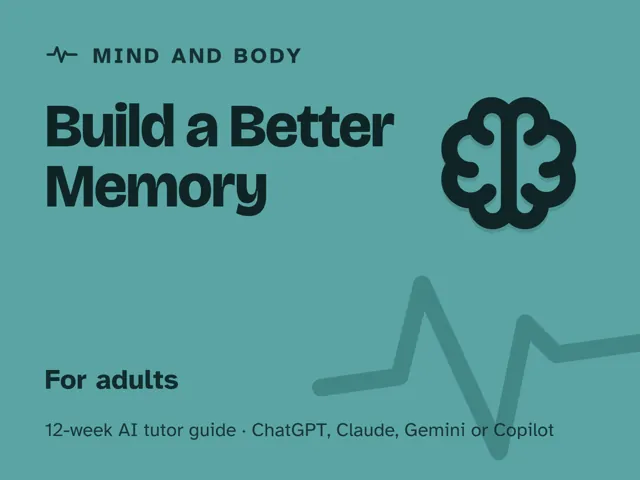
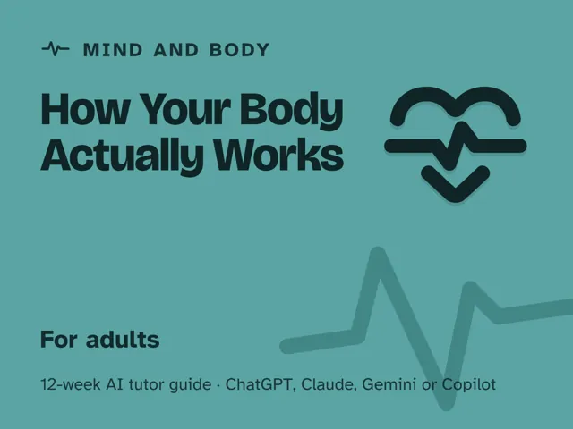

How Your Body Actually Works
$29Instant download: a PDF to read, a browser copy, and the AI-tutor file you hand straight to any AI assistant.Buy it on Etsy →
Take the free placement check first: 15 minutes, and it names the week to start at.
A masterclass you actually finish, on the one subject you can never opt out of: your own body. This is not a diet, a workout plan, or another list of tips. It's 12 weeks of understanding how your systems actually work (energy, muscle, sleep, gut, stress, immunity, hormones) so you can judge any health claim for yourself instead of chasing the next trend. Each week an AI tutor explains the mechanism in plain language, then hands you a real fad and asks, "does this make sense given how this system works?" No biology background needed. It is a teacher, not a doctor, and it says so, every time a question is really about you.
Format: You lead one ~60-minute session each week, fully scripted: every step timed and written out for you. No biology background needed, and no expertise required to run it.
What you get
- 12 deep weekly guides, each ~60 minutes and fully self-contained: a plain-language concept explanation, a concrete worked example, a minute-by-minute session plan with the AI-tutor prompts built in, a "show me" checkpoint where you explain the mechanism or test a real health claim, common mistakes to watch for, and practice.
- A "Never used an AI chat assistant? Start here" onboarding that takes a complete beginner from zero to ready in about five minutes and works with any free modern AI assistant (ChatGPT, Claude, Copilot, Gemini). No paid plan needed.
- Four rescue prompts in the front matter for when you're stuck or overwhelmed, the AI starts handing you verdicts instead of making you reason, it all feels too easy, or you want to check you really understand. Hand one to the AI and keep going.
- A digital guide (not a printable worksheet pack), built to be read and worked through on screen, alongside your AI assistant, one system at a time.
- Works wherever you live. The guide is written in US English, and every prompt tells the AI to use your country or region for spelling, units, money and examples.
The 12 weeks
- The Body as Interacting Systems
- Energy: Food, Metabolism & Why "Calories" Isn't the Whole Story
- Muscles & Movement: How Training Actually Changes You
- Sleep: What It's For and What Wrecks It
- The Gut & Digestion
- Stress & the Nervous System
- The Immune System, Honestly
- Hormones as the Body's Messengers
- Reading a Health Claim Critically: Evidence vs Fad
- Project Week I: Design a Small, Evidence-Based Habit Change
- Project Week II: Run It, Observe & Interpret Honestly
- Demo Day & the Informed-About-Your-Own-Body Mind
Who it's for
Adults who are tired of contradictory health advice and want to understand the machine they live in, so they can tell a solid claim from a fad without a science degree. If you've ever wondered whether a trend "actually makes sense," this is for you. No biology background assumed.
Why this instead of a free chatbot
A raw chatbot will confidently answer a health question either way, and happily play doctor. This pack ships the structure and guardrails it lacks: a real 12-week progression through the body's systems, a mechanism-first method for judging claims, and a tutor set up to teach the "how" and then make YOU reason, while refusing to diagnose or treat you and pointing you to a licensed clinician for anything personal. Understanding, not answers on tap.
Safety / medical disclaimer
This is educational content only, not medical advice. It teaches how the body's systems work; it does not diagnose, treat, or prevent any condition, and it is not a substitute for a licensed clinician. The AI tutor is a teacher, not a doctor. Talk to a qualified doctor, dietitian, or other professional before changing your diet, exercise, medication, or supplements, and see one promptly if you have symptoms, a diagnosed condition, or are pregnant. The diet, exercise, sleep, gut and stress weeks each carry a short safety note, and if stress or low mood ever feels unmanageable, the guide points you to a doctor, a mental health professional, or a local crisis line. You assume all risk.
FAQ
- Do I need any science or biology background? None. Every system starts from what you already believe and gets built up in plain language with everyday analogies.
- Is this a diet or workout plan? No, and that's the point. It teaches how the systems work so you can evaluate any diet or workout claim yourself, instead of following one more plan.
- Which AI does it use? I've never used one. Any modern AI assistant works (ChatGPT, Claude, Copilot, Gemini), and the free version of any of them is enough; no paid plan required. If you've never opened an AI chat before, the guide's first section walks you through setup in about five minutes, then walks you through every step after that.
- Is this medical advice? Who's liable? No. It's educational only. The tutor does not diagnose or treat and cannot give advice about your specific body; it routes personal questions to a licensed clinician, and you should consult one before changing diet, exercise, medication, or supplements or if you have symptoms. You assume the usual risk of acting on general education.
- Will it tell me what's wrong with me or what to take? No. If you ask about your own symptoms or medication, the tutor's job is to hand you back to a real clinician, by design.
- Refunds? Standard marketplace refund policy applies.
$29Instant download: a PDF to read, a browser copy, and the AI-tutor file you hand straight to any AI assistant.Buy it on Etsy →